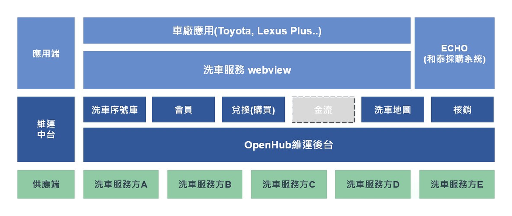
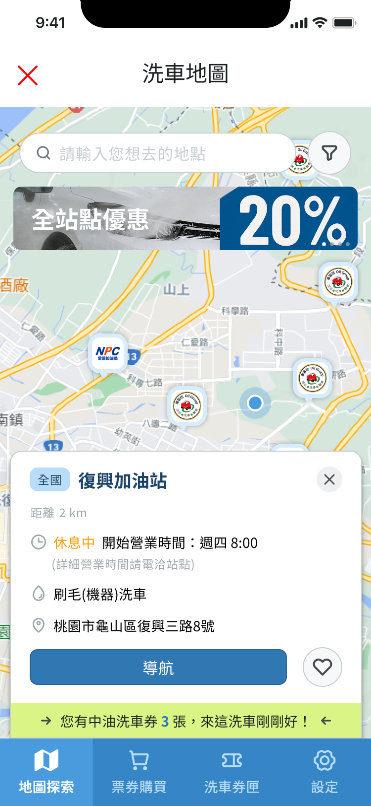
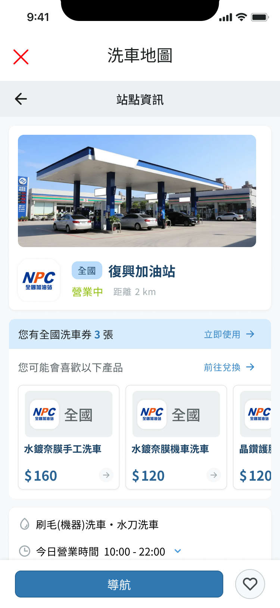
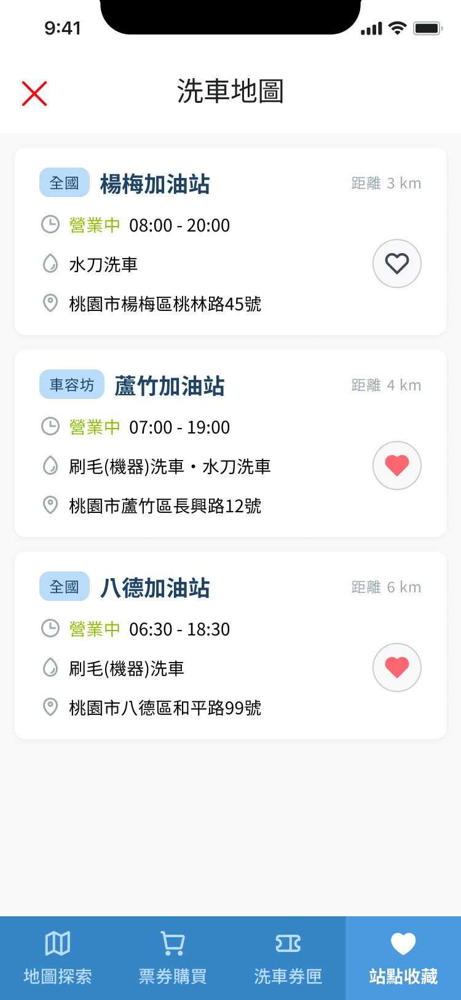
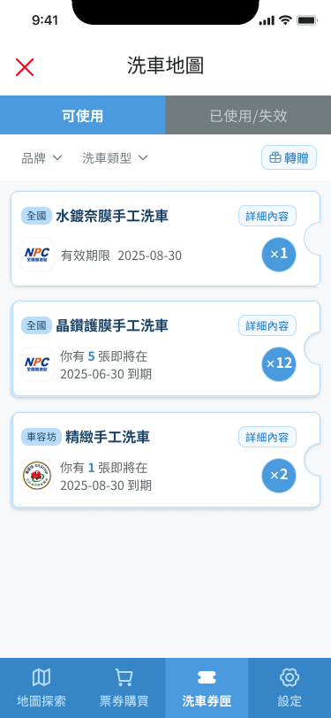
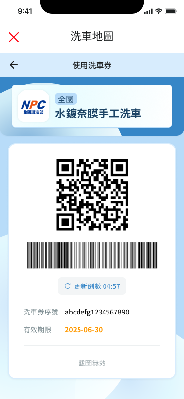

洗車服務Webview平台
OpenHub 洗車中台的標準 Webview 介面，車主可以找店、購券並以 QR Code 核銷。已上線於 My Toyota 與 Lexus Plus App。
- 我的角色
- 團隊
- 平台
- 產品階段

01
背景與角色
OpenHub 於 2025 年建置洗車服務中台：合作 App 可以 Webview 嵌入標準介面，或依 API 文件自建介面；另有管理後台處理帳務與使用者管理。經商業模式分析與需求訪談後，開發分為兩個階段。
02
設計重點
-
01
一套介面，嵌入多個品牌
介面會出現在不同品牌的 App 裡，因此以白、灰為主，避免與合作品牌衝突，再以藍色點綴呼應洗車意象。
-
02
洗車券跨 App 共用
My Toyota 與 Lexus Plus 的用戶皆為和泰 Pay 會員，透過客製化會員資料庫，讓洗車券在兩個 App 間共用。
-
03
序號制洗車券與 QR 核銷
洗車券以序號管理，由品牌提供或系統產生；車主出示 QR Code，店家以 POS 掃描完成核銷。

03
介面展示
洗車服務 Webview 的實際介面，依車主的使用情境分成兩組：先找到想去的洗車據點，再到現場出示洗車券完成核銷。
找店
從地圖找到據點、看清楚站點資訊，並收藏常去的站點。
-

地圖探索
以品牌圖示在地圖上標出據點，可搜尋地點與篩選。點選據點即出現資訊卡，顯示營業狀態、洗車類型與地址，並可直接導航；卡片下方會提醒車主手上有幾張可用的洗車券。
-

站點資訊
集中呈現站點照片、營業狀態、距離、洗車類型與營業時間。持有該品牌洗車券時可「立即使用」，沒有券也能從推薦產品直接前往兌換。
-

站點收藏
把常去的據點收成清單，一眼比較距離、營業時間與洗車類型，點愛心即可加入或取消收藏。
用券
管理手上的洗車券，到店出示條碼完成核銷。
-

洗車券匣
以「可使用」與「已使用／失效」分頁管理洗車券，可依品牌與洗車類型篩選。同款券合併顯示張數，並標示即將到期的張數與日期，也可轉贈給他人。
-

使用洗車券
到店後出示 QR Code 與條碼，由店家掃描核銷。條碼定時更新並顯示倒數，搭配「截圖無效」提示降低盜用風險；下方列出洗車券序號與有效期限。
04
成果
下一步：第二階段將新增信用卡付款，並依 GA 數據優化體驗、設計導流與留存機制。
這個專案讓我學到，設計一套要嵌入不同品牌 App 的介面，中性不等於沒有個性：以白、灰為底讓介面融入各品牌，再用一致的藍色與元件建立洗車服務自己的辨識度。以管理者身分參與企劃，也讓我更早理解序號、核銷與對帳的限制，設計時能把後台流程一起考慮進去。